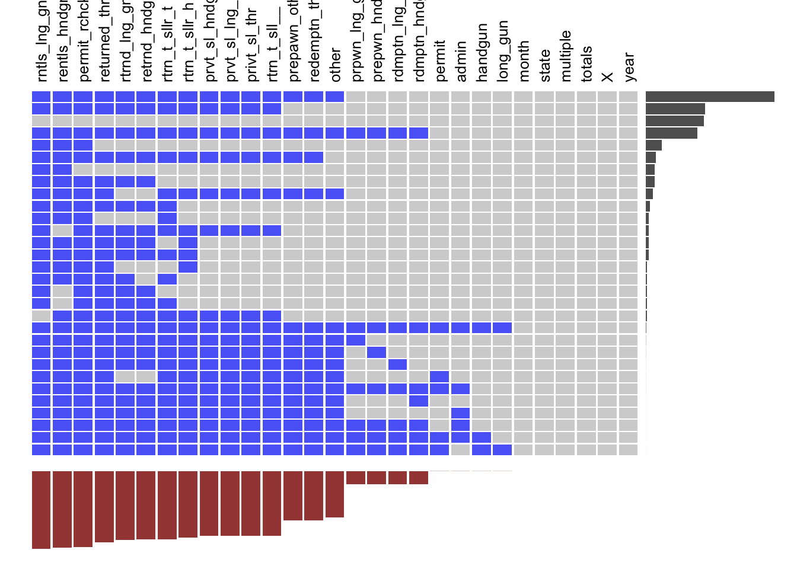

Chapter 3 Missing values
3.1 Missing Value of Gun Violence Data
As what we need of gun violence is date, state, killed number, injured number, longitude and latitude, and some character attributes. Therefore, the missing pattern are based on these volumns. As shown in the graph, more than 90% value are not missing, and only small number of gun violence records miss some lattitude and longitude. Because this dataframe is larger than 230,000 records, therefore, only missing about 8000 records is acceptable.
3.2 Missing Value of Gun background check Data
## Warning in melt(as.data.frame(xs), ncol(xs)): The melt generic in
## data.table has been passed a data.frame and will attempt to redirect to the
## relevant reshape2 method; please note that reshape2 is deprecated, and this
## redirection is now deprecated as well. To continue using melt methods from
## reshape2 while both libraries are attached, e.g. melt.list, you can prepend
## the namespace like reshape2::melt(as.data.frame(xs)). In the next version,
## this warning will become an error.
## month state
## 0 0
## permit permit_recheck
## 24 11385
## handgun long_gun
## 20 19
## other multiple
## 6985 0
## admin prepawn_handgun
## 23 1943
## prepawn_long_gun prepawn_other
## 1945 7370
## redemption_handgun redemption_long_gun
## 1940 1941
## redemption_other returned_handgun
## 7370 10285
## returned_long_gun returned_other
## 10340 10670
## rentals_handgun rentals_long_gun
## 11495 11660
## private_sale_handgun private_sale_long_gun
## 9735 9735
## private_sale_other return_to_seller_handgun
## 9735 10010
## return_to_seller_long_gun return_to_seller_other
## 9735 10230
## totals X
## 0 0
## year
## 0A lot of firearm background checking data are missing, this is out of two reason:
Difference of state laws: For example, there is a large number of missing values in ’returned_*’ (‘returned_handgun’, ‘returned_long_gun’, ‘returned_other’, ‘rentals_handgun’, ‘rentals_long_gun’). According to FBI-NICS website, “As of January 20, 2015, Title 28, Code of Federal Regulations, Part 25, allows local, state, tribal, and federal law enforcement agencies to access the NICS to conduct background checks for the purpose of returning firearms in their possession to an individual (e.g., at the conclusion of a case).”, therefore, some states don’t have returned long guns or short guns data.
The missing details of purchasing: For example, there are some missing values in ‘private_sale’ (‘private_sale_handgun’, ‘private_sale_long_gun’, ‘private_sale_other’), as private sellers represent unlicensed sellers, and only 24/50 states has gun laws about back ground checking When Seller Is Not a Licensed Dealer (https://consumer.findlaw.com/consumer-transactions/private-gun-sale-laws-by-state.html), therefore, some details of private sales are missing.
According to the summary of missing values, the most common mode of missing value is missing returned firearms, private sales and permit recheck data. As the what we used of this dataframe is totals, and this column has no missing values, therefore, it can be used.
3.3 Missing Value of GDP and Population data
## X GeoFIPS GeoName
## 0 0 0
## Region TableName ComponentName
## 1 0 0
## Unit IndustryId IndustryClassification
## 0 0 0
## Description X1997 X1998
## 0 0 0
## X1999 X2000 X2001
## 0 0 0
## X2002 X2003 X2004
## 0 0 0
## X2005 X2006 X2007
## 0 0 0
## X2008 X2009 X2010
## 0 0 0
## X2011 X2012 X2013
## 0 0 0
## X2014 X2015 X2016
## 0 0 0
## X2017 X2018
## 0 0As each ’X20**’ represents the GDP of each year and “GeoName” represents the states. And the region is just number of different regions, therefore, the only one row missing data don’t effect our analysis.
## state year population
## 0 0 0There is no missing values in population data.